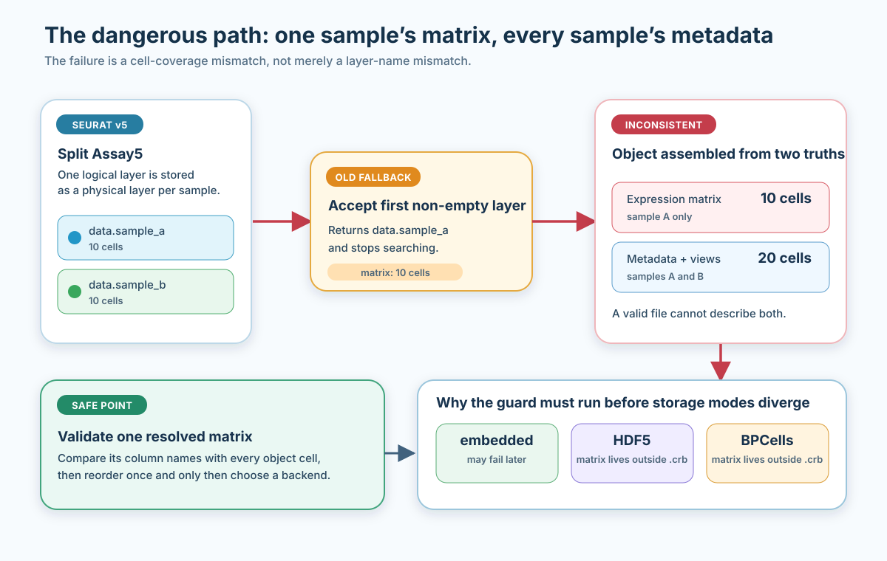
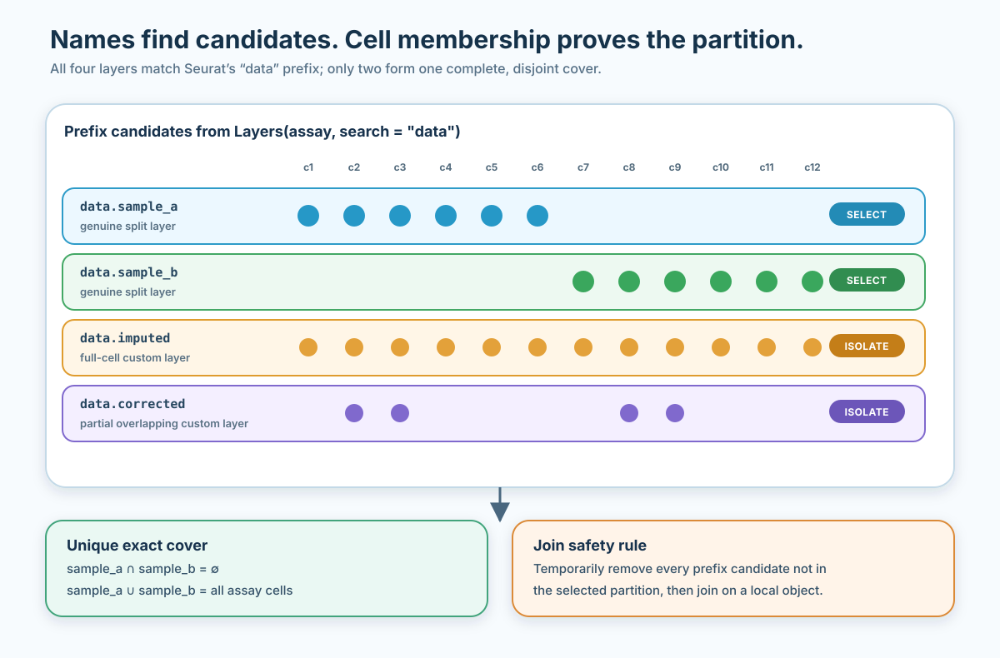
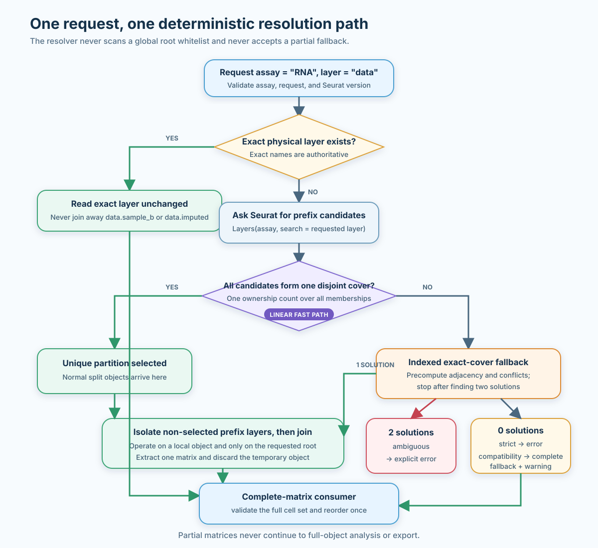
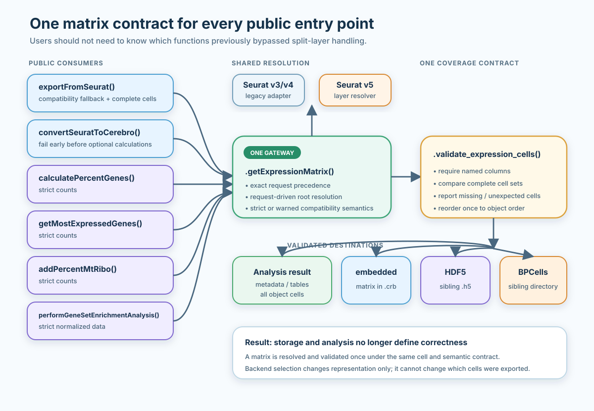

Seurat v5 layered assays: complete and safe expression matrices
CerebroNexus contributors
06 September, 2026
Source:vignettes/seurat_v5_layered_assays.Rmd
seurat_v5_layered_assays.RmdWhat this guide solves
Seurat v5 introduced layers: one assay can hold
several matrices instead of one fixed counts,
data, and scale.data slot. This is useful for
multi-sample workflows because split() can keep each sample
in its own layer until an integration or join step.
It also changes a basic assumption made by many downstream tools.
Asking an Assay5 for data may no longer mean “return one
matrix containing every cell”. The normalized values may instead live in
data.sample_a, data.sample_b, and more
sample-specific layers.
CerebroNexus needs one coherent expression matrix for:
-
.crbexport; - metadata calculations;
- most-expressed-gene tables;
- mitochondrial and ribosomal percentages;
- gene-set enrichment.
This guide explains:
- how split layers differ from custom layers;
- how CerebroNexus resolves a complete matrix safely;
- which behaviour is automatic;
- when CerebroNexus stops and asks you to disambiguate;
- how source storage differs from
.crboutput storage; - how to diagnose difficult objects.
The short version
For an ordinary in-memory Seurat v5 object split by sample, use the same export call as for an unsplit object:
library(CerebroNexus)
exportFromSeurat(
object,
assay = "RNA",
slot = "data",
file = "experiment.crb",
experiment_name = "experiment",
organism = "hg",
groups = c("sample", "seurat_clusters"),
nUMI = "nCount_RNA",
nGene = "nFeature_RNA"
)CerebroNexus resolves a unique sample partition, joins only the requested logical layer, checks that the result contains every object cell, and then chooses the requested output storage mode.
You normally do not need to call
JoinLayers() yourself.
You do need to intervene when:
- more than one valid partition exists under the requested prefix;
- no partition covers every assay cell;
- the source layers live on disk as BPCells or DelayedArray matrices;
- you deliberately request one partial physical layer for an operation that requires the complete object.
What a layered assay looks like
Unsplit
An ordinary normalized assay may contain:
RNA
├── counts
└── dataBoth layers usually cover the complete object.
Inspect them with:
Split by sample
After:
object[["RNA"]] <- split(
object[["RNA"]],
f = object$sample
)the assay may contain:
RNA
├── counts.sample_a
├── counts.sample_b
├── data.sample_a
└── data.sample_bEach physical layer contains only one sample. Together,
data.sample_a and data.sample_b represent the
logical data layer.
The suffix does not need to be numeric. It is whatever value was present in the splitting factor.
The failure that must be prevented
The unsafe behaviour is not merely “the wrong layer name was selected”. It is that one part of the exported object describes fewer cells than the rest.

If a fallback accepts data.sample_a alone:
- expression contains sample A;
- metadata contains samples A and B;
- projections contain samples A and B;
- grouping tables contain samples A and B.
The .crb is internally contradictory.
This check must happen before output storage modes diverge. An embedded matrix, an HDF5 sibling, and a BPCells sibling are different representations of the same data contract; they must not differ in which errors they catch.
Why names are not enough
Names that begin with data can mean very different
things:
data.sample_a a real sample split
data.sample_b a real sample split
data.imputed a custom full-cell matrix
data_corrected a custom matrix
dataBackup a custom matrixSeurat’s JoinLayers(layers = "data") uses broad prefix
lookup. It may therefore see all of these as things it could
consume.
CerebroNexus uses that same broad set for join
protection, but only dotted data.* children may
prove a data partition. It then uses cell
membership to decide which eligible children form the real
partition.

A real sample partition has three properties:
- it contains at least two non-empty layers;
- selected layer memberships are pairwise disjoint;
- their union is the complete assay cell set.
A full-cell custom layer is not a split partition. A partial custom layer that overlaps both samples is not a member of the disjoint partition.
How CerebroNexus resolves a request
The request drives resolution. CerebroNexus does not maintain a global list of every possible custom layer root.
For slot = "data":
- if exact
dataexists, read it; - otherwise ask Seurat for the broad set that
JoinLayers()could consume; - restrict partition proof to
data.*children and identify a unique cell partition; - isolate every prefix candidate outside that partition on a local object;
- join the selected
datapartition; - extract the matrix;
- validate complete cell coverage when the consumer requires it.
For slot = "ambient", the same procedure starts from
ambient. This supports custom split roots without teaching
CerebroNexus the word ambient.

Exact layer requests
An exact physical layer request is authoritative. For example, this export request deliberately names one sample layer:
exportFromSeurat(
object,
assay = "RNA",
slot = "data.sample_b",
file = "sample_b.crb",
experiment_name = "sample B",
organism = "hg",
groups = "sample",
nUMI = "nCount_RNA",
nGene = "nFeature_RNA"
)The resolver honours data.sample_b. It does not join the
layer away and return all samples while resolving the request.
This matrix is intentionally partial. exportFromSeurat()
requires the complete object and therefore rejects the example unless
object itself has first been subset to those same sample B
cells.
Exact logical root
If exact data already exists, it takes precedence.
Siblings beginning with data are not joined into it.
This prevents a custom layer such as data.imputed from
modifying a valid standard data layer.
Unique split partition
If exact data is absent and data.sample_a
plus data.sample_b form the only complete disjoint
partition, CerebroNexus joins those layers automatically.
The caller’s object is not persistently changed. Joining happens on the resolver’s local object value, and the function returns only the resulting matrix.
Custom split roots
Custom logical layers can be resolved by request:
exportFromSeurat(
object,
assay = "RNA",
slot = "ambient",
file = "ambient.crb",
experiment_name = "ambient example",
organism = "hg",
groups = "sample",
nUMI = "nCount_RNA",
nGene = "nFeature_RNA"
)If ambient.sample_a and ambient.sample_b
uniquely partition all assay cells, the result is complete.
Roots may themselves contain dots. Request
ambient.corrected to resolve
ambient.corrected.sample_a plus
ambient.corrected.sample_b.
The explicit request matters. If data is absent and the
only complete cover is data.imputed.sample_a plus
data.imputed.sample_b, the same layers are also a complete
split of the deeper custom root data.imputed. Names contain
no provenance that can prove which meaning is intended, so CerebroNexus
stops and asks you to request data.imputed or join
data explicitly.
Ambiguous partitions
Suppose one assay contains both:
data.sample_a + data.sample_b
data.batch_1 + data.batch_2and each pair independently covers every cell.
Both are structurally valid. CerebroNexus cannot infer which one has the biological meaning you intended, so it reports both partitions and stops.
Resolve the ambiguity by:
- requesting an exact physical layer if a partial matrix is intended;
- renaming unrelated layers so they do not share the requested prefix;
- joining the intended layers in Seurat before calling CerebroNexus.
Silently taking the first valid partition would make results depend on layer order and is not supported.
No complete partition
If candidates leave cells uncovered or every possible combination overlaps, CerebroNexus reports:
- the requested assay and layer;
- candidate layer names;
- cell counts per candidate;
- missing cell examples;
- inspection commands.
A partial matrix is never accepted for a full-object operation.
One resolver for all expression consumers
Layer support is not limited to export. All CerebroNexus functions that directly need a complete expression matrix use the same resolver and cell validator.

| Function | Required semantic data | Fallback policy |
|---|---|---|
exportFromSeurat() |
requested slot
|
warned compatibility fallback |
convertSeuratToCerebro() |
requested slot
|
warned compatibility fallback |
calculatePercentGenes() |
counts |
strict |
getMostExpressedGenes() |
counts |
strict |
addPercentMtRibo() |
counts |
strict |
performGeneSetEnrichmentAnalysis() |
normalized data
|
strict |
The preprocessing functions are strict because raw counts and normalized values are not interchangeable analysis inputs.
During export, the validated expression matrix is reused by spatial
extraction. This matters for layered assays: the package resolves and
joins the requested root once, then intersects the same matrix with each
image’s coordinates. It does not independently resolve the assay again
for every spatial image. Spatial payloads retain both the requested
layer and the physical layer. For example, a warned
data -> counts compatibility fallback is stored as
requested_layer = "data" and layer = "counts"
rather than mislabelling raw counts as normalized data.
getMarkerGenes() delegates to Seurat’s marker machinery
and does not use this direct matrix path.
Behaviour by scenario
| Assay state | Request | Behaviour |
|---|---|---|
exact full data
|
data |
read exact layer |
exact partial data.sample_b
|
exact name | honour exact layer |
unique data.* sample partition |
data |
isolate custom prefixes and join |
unique ambient.* partition |
ambient |
resolve without a whitelist |
full data.imputed, no exact data
|
strict data
|
error; do not reinterpret it |
| overlapping partial custom layer plus true partition | data |
select independent true partition |
| two valid partitions | root | ambiguity error |
| partition misses cells | root | coverage error |
| no normalized data, complete counts | export requests data
|
warn before compatibility fallback |
partial data.imputed, complete counts |
export requests data
|
ignore incomplete noise, warn, use complete counts |
| no normalized data, complete counts | enrichment requests data
|
strict error |
| BPCells-backed source | any | materialisation error |
Source storage and output storage are different
Two independent choices are easy to confuse.
Source assay storage
This describes how the input Seurat object stores its layers:
- in-memory
matrix; - sparse
dgCMatrix; - BPCells
IterableMatrix; - DelayedArray-backed matrix.
CerebroNexus automatically joins in-memory Seurat v5 partitions. Disk-backed source layers must currently be materialised first. Every member of the chosen partition is checked, so a mixed in-memory/BPCells partition is rejected regardless of layer order.
Output expression storage
expression_matrix_mode describes how CerebroNexus writes
the resolved matrix:
-
"embedded": inside the.crb; -
"h5": a sibling HDF5 file; -
"bpcells": a sibling BPCells directory.
Choosing expression_matrix_mode = "bpcells" does not
make a BPCells-backed source assay readable. Source resolution happens
first; output storage happens after the complete matrix has been
validated.
Disk-backed source layers
When a source layer lives on disk, CerebroNexus stops with a materialisation recipe. Materialise every layer, not only the first layer matching the request:
assay <- "RNA"
for (layer in SeuratObject::Layers(object[[assay]])) {
SeuratObject::LayerData(
object[[assay]],
layer = layer
) <- methods::as(
SeuratObject::LayerData(
object[[assay]],
layer = layer
),
"dgCMatrix"
)
}Then rerun the CerebroNexus operation.
Materialising one counts.* layer alone recreates the
partial-sample problem. The loop is intentionally all-layer.
Memory and performance
What is linear
For a normal split assay, partition detection:
- maps cell names to integer IDs once;
- counts layer ownership once;
- confirms that every cell belongs to exactly one candidate.
Work is approximately linear in total membership size.
What happens with custom overlaps
If unrelated custom layers overlap the true sample partition, CerebroNexus uses an indexed exact-cover search. Cell-to-layer adjacency and conflicts are precomputed, so recursive decisions do not repeatedly scan every cell against every layer.
If two solutions are found, search stops and reports ambiguity.
Conflict indexing, visited search nodes, and recursion depth have independent deterministic budgets. The depth budget is checked before the next recursive call. Pathological sets of highly overlapping prefix layers therefore stop with an actionable request to rename unrelated layers or join explicitly instead of exhausting memory or R’s call stack.
What still materialises
JoinLayers() materialises the requested logical root. A
large split assay therefore has a temporary memory peak.
CerebroNexus reduces avoidable cost by:
- joining only the requested root, not every split root;
- not backing up full custom matrices;
- resolving layer membership before matrix joining;
- handing the validated matrix from
convertSeuratToCerebro()toexportFromSeurat()instead of joining the same split root twice.
If the object is too large to materialise safely, join or convert it in a memory-appropriate preprocessing environment before exporting.
Troubleshooting
1. List physical layers
SeuratObject::Layers(object[["RNA"]])3. Inspect memberships
SeuratObject::Cells(
object[["RNA"]],
layer = "data.sample_a"
)Compare them with:
SeuratObject::Cells(object)4. Check whether an exact root already exists
If true, CerebroNexus reads exact data and does not join
prefix siblings.
5. Inspect Seurat’s prefix candidates
SeuratObject::Layers(
object[["RNA"]],
search = "data"
)These are the layers Seurat may consider when joining the
data root.
6. Join manually when you know the intended semantics
object[["RNA"]] <- SeuratObject::JoinLayers(
object[["RNA"]],
layers = "data",
new = "data"
)Before doing this, rename or remove unrelated prefix layers. Seurat’s
prefix lookup may otherwise include custom names such as
dataBackup.
Always verify:
Reading common errors
“Resolved layer covers X of Y object cells”
The request was resolved exactly, but the consumer requires the
complete object. This commonly follows an exact request such as
slot = "data.sample_b".
Use the logical root (slot = "data") to request a join,
or subset the Seurat object itself to the same cells before
exporting.
“More than one valid cell partition”
Two layer combinations both cover the assay. Rename unrelated layers or join the intended representation explicitly.
“No unique disjoint partition covers the assay”
The prefix candidates are incomplete, overlapping, or both. Inspect membership counts and check whether a sample layer was removed during preprocessing.
“Layer lives on disk”
The source layer is BPCells- or DelayedArray-backed. Follow the
all-layer materialisation loop in the message. Changing
expression_matrix_mode does not solve source storage.
Cross-semantic fallback warning
Export compatibility used a complete matrix from another semantic
class. Read the warning carefully: using counts instead of
normalized data changes the meaning of expression
values.
For analysis functions, supply the required semantic layer instead; they do not perform this substitution.
“Error processing …”
convertSeuratToCerebro() adds the input source to an
export error and then rethrows it. Treat this as a failed conversion: no
new .crb was produced. Remove or archive any older output
with the same name before retrying if your workflow discovers files by
name alone.
Recommended workflow
- Preserve sample-split layers while you need them for Seurat integration.
- Run CerebroNexus preprocessing functions directly; they resolve complete partitions without changing the caller’s assay.
- Export with the logical layer name, usually
slot = "data". - Treat ambiguity and incomplete coverage as data-contract errors, not warnings to suppress.
- Choose embedded, HDF5, or BPCells output based on deployment needs only after source resolution is understood.